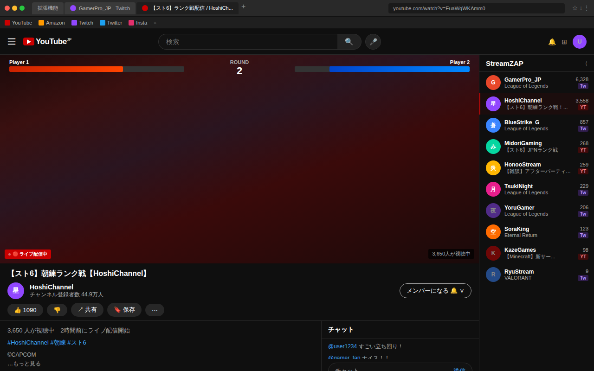

フォロー中のライブ配信を横断して一覧表示。配信を見ながら、次の配信へザッピングができます。
TwitchとYouTubeを行き来して、誰が配信中か確認して、タブを切り替えて…。それだけで時間がかかる。
フォロー中の配信者が両プラットフォームで一覧表示される。タブの切り替えは不要。
今盛り上がっている配信が上に来る。話題の配信を見逃さない。
配信を見ながらパネルを開ける。コメント欄はそのまま、邪魔しない。
拡張機能のアイコンをクリックして、TwitchとYouTubeのアカウントを連携するだけ。
TwitchまたはYouTubeで好きな配信を開く。設定は不要。
パネルがスライドして開く。見たい配信をクリックすると新しいタブで開く。
YouTubeで配信を見ながら、フォロー中のライブ一覧が右側に表示される。

どちらか一方でも、両方でも使える。
インストールは30秒。ザッピングが変わります！
⚡ Chrome に追加する（無料）